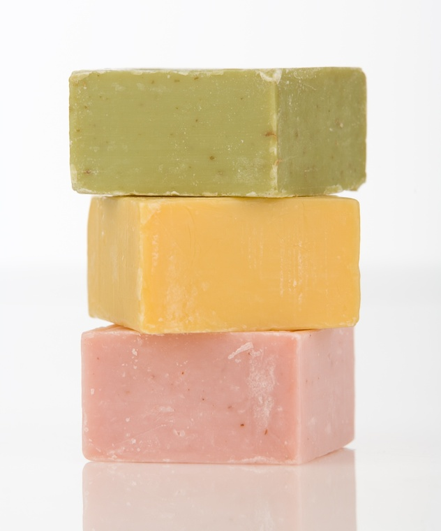

If you’ve ever read the labels on health and hygiene products, you know it can be a challenge to find a product that doesn’t contain long lists of ingredients you can’t even pronounce, let alone know what they are or what they’re for. Plus, there are the occasional headlines that yet another standard ingredient in the products we use every day turns out to be counter to the very health and cleanliness the product is supposed to promote. Sometimes the easiest way to ensure that you’re using the best, healthiest products - from soap to toothpaste - is to simply make your own. You can easily make safe, effective toiletries - including lotion and deodorant - at home, using simple, healthy ingredients.
Try your hand at one or all of these basic recipes and rest assured that your body is getting the best care you can give it. You should be able to find the basic ingredients listed below at your local pharmacy or health food store.
Shea Butter Soap (from Soothing Soaps by Sandy Maine)
2 cups glycerin soap base, melted in a double boiler
2 tbsp shea butter, melted separately
Several drops of your favorite essential oil (optional)
Mix well, pour into molds (you can use regular food storage containers), and cool.
Whitening Sage Tooth Powder (from Natural Beauty at Home by Janice Cox)
Mix together 1 tsp each of baking soda, table salt, and dried sage.
Scoop onto a dampened toothbrush and brush as usual.
Body Butter (from Natural Beauty at Home)
1/4 cup grated cocoa butter
1 tbsp coconut oil
2 tbsp sesame oil
1 tbsp avocado oil
1 tbsp grated beeswax
Combine all the ingredients in an ovenproof glass container. Place the container with the mixture in a pan with a 1- to 2-inch water bath. Melt the oils and wax gently.
Pour the melted mixture into a clean jar and allow to cool. Stir the cooled mixture.
Spread the butter on your body and massage into the skin. Yields 4 oz.
Basic Deodorant Powder Formula (from Better Basics for the Home by Annie Berthold-Bond)
1/2 cup baking soda
1/2 cup cornstarch
Antibacterial essential oils such as cinnamon, rose, birch or lavender, as preferred
Place the baking soda and cornstarch in a glass jar. Add the essential oils; stir and cover. Dampen a powder puff, cotton ball or sea sponge and dab into the mixture (or sprinkle the mixture on the sponge); pat underarms. Makes 1 cup.
|
 CARLOS RESTREPO/FOTOLIA Homemade soaps are a fun, healthy skin care alternative. |
|
|